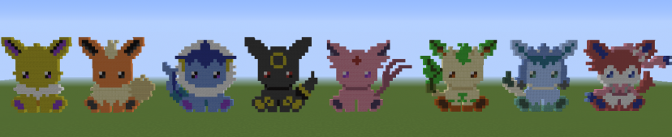
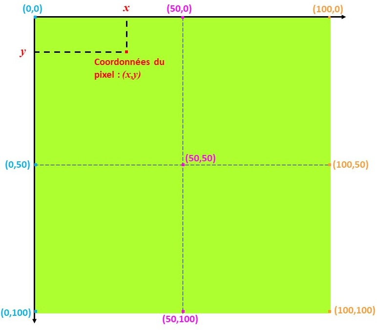

Ce travail se fait par groupes de 4 à 6 élèves. Chaque élève réalise une création sur un même thème, puis les créations seront disposées sur un seul fichier.
Fichier de départ
Charger le fichier ci-dessous, l'enregistrer dans votre dossier personnel (clic droit et "enregistrer la cible du lien sous") et l'ouvrir à partir de Spyder. Fichier Python
Ce fichier est le fichier de base, il permet de créer une image qui constituera le fond. Sa taille est 100 pixels x 100 pixels. Vous pourrez changer la couleur du fond selon le thème choisi. Vous pouvez aussi changer ses dimensions.
Vous devez vous partager le tableau, chacun choisissant une zone.
Par exemple, pour un groupe de 4, vous pouvez faire 4 zones :

Vous pouvez aussi choisir qu'une personne fera le fond et les autres les éléments du premier plan
Création d'une image personnelle
Chacun choisit une image à réaliser une image dans sa partie, en fonction du thème choisi.
Quelques exemples pour vous aider :


Mais vous devez proposer une création personnelle !
Ne choisissez pas quelque chose de trop ambitieux, mais ne vous contentez pas non plus de quelque chose de trop facile.
Ensuite chacun réalise sa création, dans sa zone, en utilisant le moins de lignes de code possible.
Je vous conseille de faire d'abord le tracé sur un papier quadrillé.
Recomposition de l'image
Vous devez copier tous vos fichiers Python sur un même ordinateur puis les assembler sur le fichier de départ.
Testez votre fichier en créant voter tableau !